Trong giai đoạn đầu của dự án triển khai hàng loạt, tất cả các máy sẽ sử dụng một giải pháp thống nhất. Tuy nhiên, trong quá trình hiệu chỉnh thiết bị, do sự khác biệt giữa các máy, dữ liệu sử dụng của mỗi máy sẽ khác nhau. Thêm vào đó, khi giải pháp được nâng cấp và hoàn thiện dần, cần cấu hình giải pháp mới cho tất cả các máy, nhưng vẫn giữ được dữ liệu đặc thù của từng máy mà không cần hiệu chỉnh lại. Quá trình này được minh họa trong Hình 1. Do đó, chức năng đồng bộ thiết bị được thêm vào, cho phép đồng bộ chương trình hoặc dữ liệu từ máy chuẩn sang các máy khác. Giao diện phần mềm được minh họa trong Hình 2.
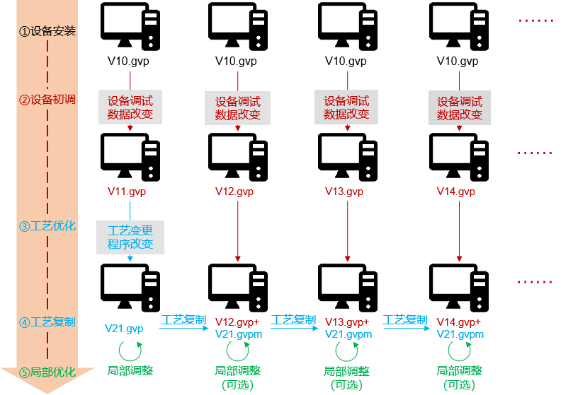
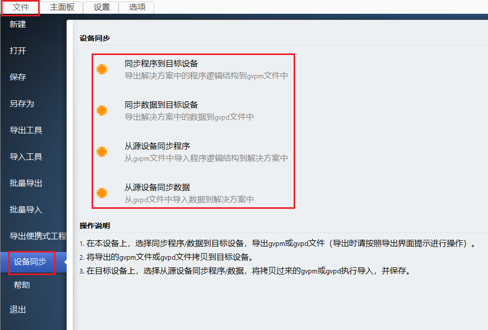
Đồng bộ chương trình sang thiết bị mục tiêu
Xuất cấu trúc logic chương trình trong giải pháp ra tệp gvpm.
Cấu trúc logic chương trình bao gồm: sơ đồ quy trình, chuỗi tham số, giao diện, biểu thức, bố cục giao diện sản xuất, v.v.
Đồng bộ dữ liệu sang thiết bị mục tiêu
Xuất dữ liệu trong giải pháp ra tệp gvpd.
Dữ liệu bao gồm: tham số công cụ, giá trị biến, tên công việc, cài đặt cửa sổ nhật ký giao diện sản xuất, v.v., cụ thể là các mục có ký hiệu D trong Bảng 1.
Đồng bộ chương trình từ thiết bị nguồn
Đồng bộ dữ liệu từ thiết bị nguồn
Thay đổi công nghệ: khi dự án có thêm tính năng mới, sơ đồ quy trình, hiển thị giao diện, biểu thức, nội dung script, v.v. đều thay đổi, và bạn muốn đồng bộ các thay đổi này sang các thiết bị khác. Trường hợp này sử dụng “Đồng bộ thiết bị -> Đồng bộ chương trình sang thiết bị mục tiêu” hoặc “Đồng bộ thiết bị -> Đồng bộ chương trình từ thiết bị nguồn”. Các bước cụ thể như sau:
Trên máy chuẩn, chọn Tệp -> Đồng bộ thiết bị -> Đồng bộ chương trình sang thiết bị mục tiêu, như Hình 3:
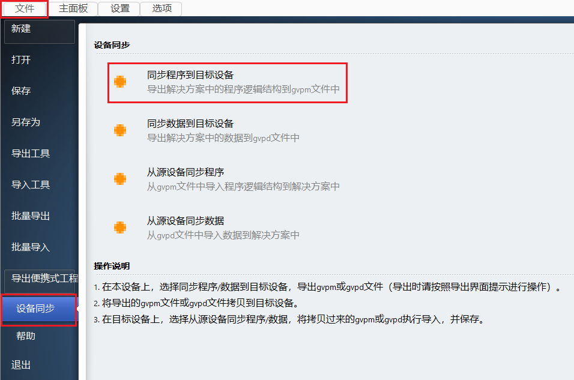
Thực hiện cấu hình xuất chương trình
Cấu hình xuất công cụ: khi xuất cấu trúc logic chương trình, có thể đồng thời xuất các tham số công cụ, tích chọn các công cụ cần xuất, như Hình 4
Lưu ý
Khi xuất cấu hình chương trình, danh sách công cụ mặc định không chọn.
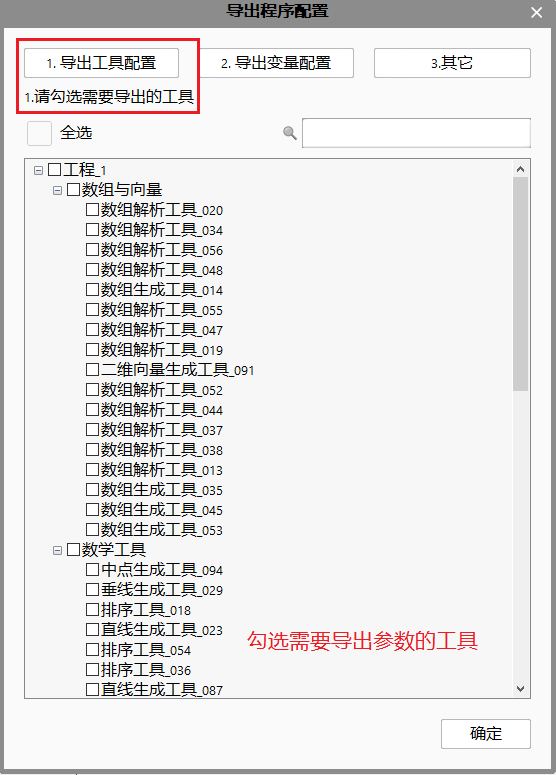
Cấu hình xuất biến: khi xuất cấu trúc logic chương trình, có thể đồng thời xuất giá trị các biến trong dự án, tích chọn các biến cần xuất. Khuyến nghị chọn Hiển thị tất cả biến và dùng cấu hình đề xuất, như Hình 5(b)
Lưu ý
- Khi xuất cấu hình chương trình, mục “Giao diện sản xuất không thể chỉnh sửa?” mặc định là Có thì mới chọn “Có xuất” như Hình 5(a).
- Nếu không tích chọn Hiển thị tất cả biến và danh sách biến trống, cấu hình đúng. Nếu danh sách không trống, cần kiểm tra cấu hình xuất biến.
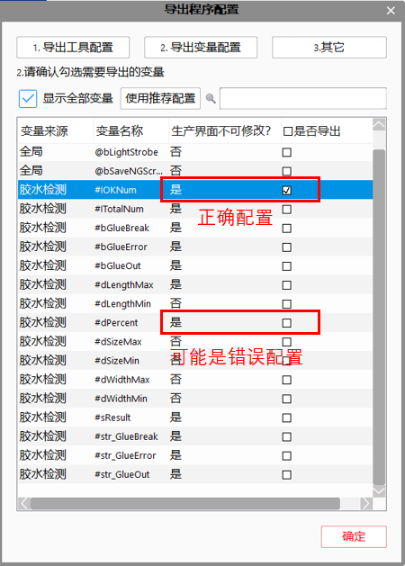
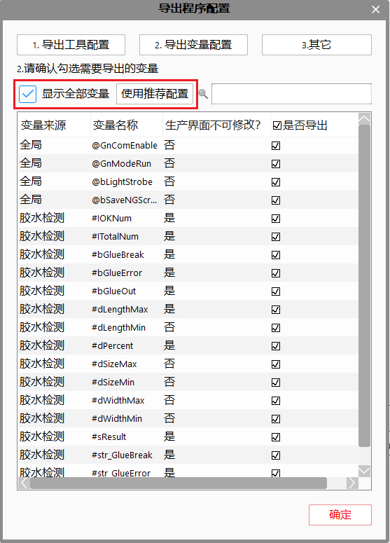
Cấu hình khác: khi xuất cấu trúc logic chương trình, có thể đồng thời xuất các tham số trong quản lý camera, truyền thông, ánh sáng, tích chọn các tham số cần xuất, như Hình 6
Lưu ý
Khi xuất cấu hình chương trình, mặc định không chọn.
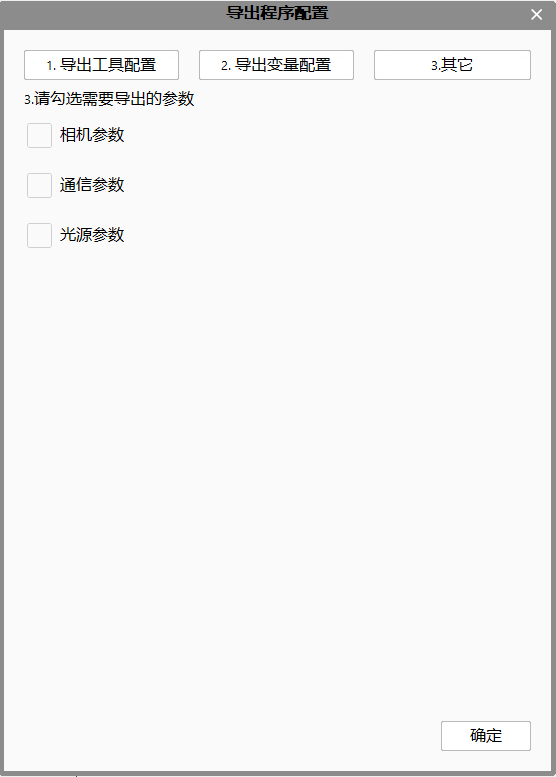
Trên máy mục tiêu, chọn Tệp -> Đồng bộ thiết bị -> Đồng bộ chương trình từ thiết bị nguồn, như Hình 7:
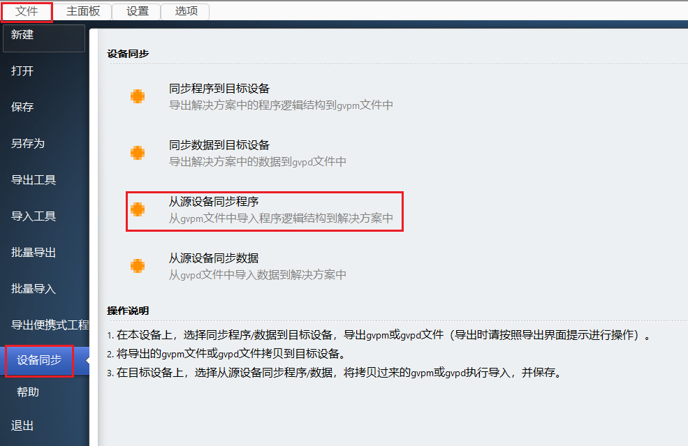
Chuẩn hóa tham số: theo yêu cầu khách hàng, cần đồng nhất các tham số sản xuất trên các thiết bị. Các tham số thay đổi trên một máy sẽ được đồng bộ sang các máy khác. Trường hợp này sử dụng “Đồng bộ thiết bị -> Đồng bộ dữ liệu sang thiết bị mục tiêu” hoặc “Đồng bộ thiết bị -> Đồng bộ dữ liệu từ thiết bị nguồn”. Các bước cụ thể như sau:
Trên máy chuẩn, chọn Tệp -> Đồng bộ thiết bị -> Đồng bộ dữ liệu sang thiết bị mục tiêu, như Hình 8:
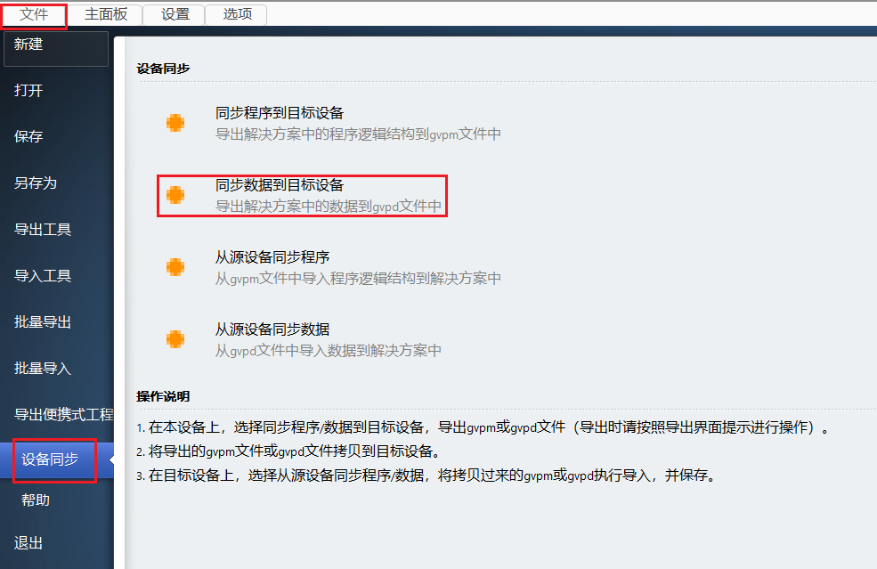
Thực hiện cấu hình xuất dữ liệu
Cấu hình xuất công cụ: xuất dữ liệu tham số công cụ, tích chọn các công cụ cần xuất, như Hình 9
Lưu ý
Khi xuất cấu hình dữ liệu, danh sách công cụ mặc định chọn tất cả, có thể bỏ các công cụ không cần xuất.
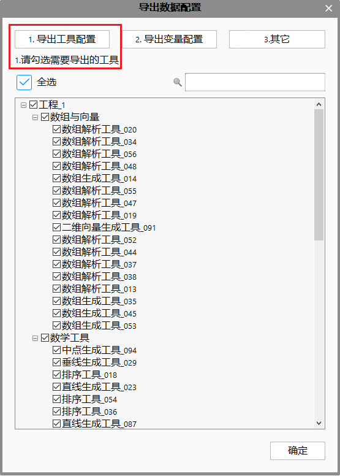
Cấu hình xuất biến: xuất giá trị các biến trong dự án, tích chọn các biến cần xuất. Khuyến nghị chọn Hiển thị tất cả biến và dùng cấu hình đề xuất, như Hình 10
Lưu ý
- Khi xuất cấu hình dữ liệu, mục “Giao diện sản xuất không thể chỉnh sửa?” mặc định là Có thì “Có xuất” không được tích, như Hình 10.
- Nếu không chọn Hiển thị tất cả biến và danh sách biến trống, cấu hình đúng. Nếu danh sách không trống, cần kiểm tra cấu hình xuất biến.
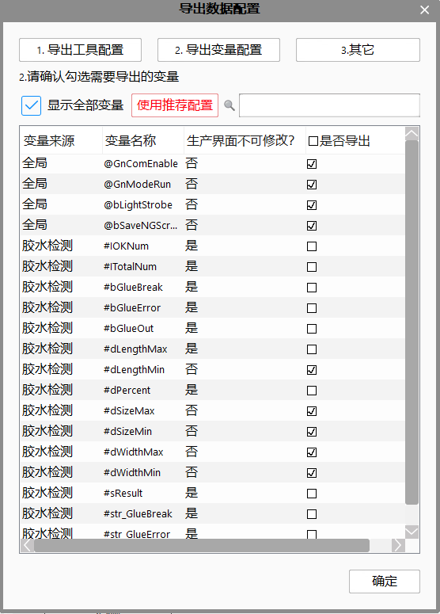
Cấu hình khác: đồng bộ xuất các tham số trong quản lý camera, truyền thông, ánh sáng, tích chọn các tham số cần xuất, như Hình 11
Lưu ý
Khi xuất cấu hình dữ liệu, mặc định chọn tất cả.
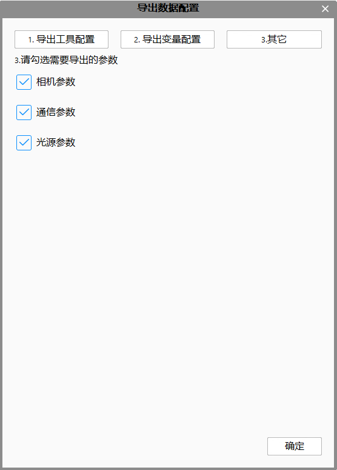
Trên máy mục tiêu, chọn Tệp -> Đồng bộ thiết bị -> Đồng bộ dữ liệu từ thiết bị nguồn, như Hình 12:
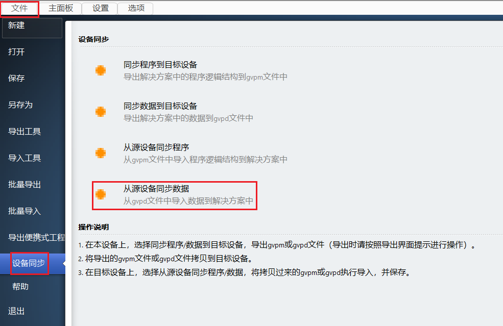